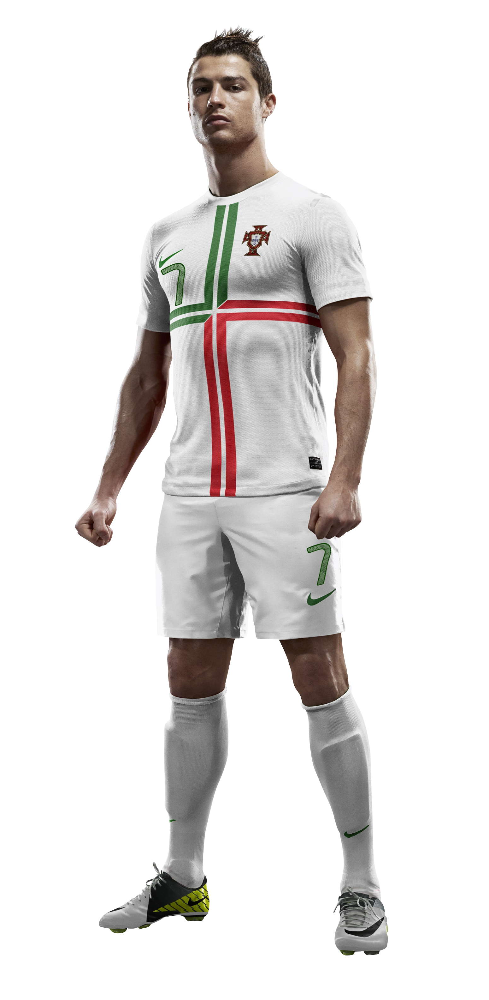
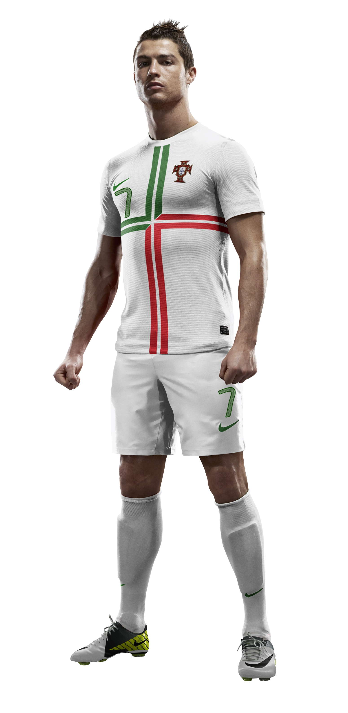

Cristiano Ronaldo, también conocido como "El Bicho" o "Siu", es sin duda uno de los
futbolistas más destacados de todos los tiempos. Nacido el 5 de
febrero de 1985 en Madeira, Portugal, Ronaldo ha dejado una huella
imborrable en la historia del fútbol. Desde temprana edad, Ronaldo
demostró su talento excepcional y una dedicación inquebrantable para
perfeccionar su juego. Su velocidad, habilidad con el balón y su
capacidad para marcar goles lo convirtieron rápidamente en un
jugador sobresaliente.
La carrera de Ronaldo ha sido repleta de éxitos y logros. Ha jugado
en algunos de los mejores clubes del mundo, incluyendo al
Sporting de Lisboa, Manchester United,
Real Madrid y Juventus. Con estos equipos,
ha ganado numerosos títulos de liga, copas nacionales e
internacionales, y ha dejado una huella imborrable en cada uno de
ellos.
 

El bicho con una jirafa
El bicho con una jirafa
El bicho con una jirafa
El bicho con una jirafa